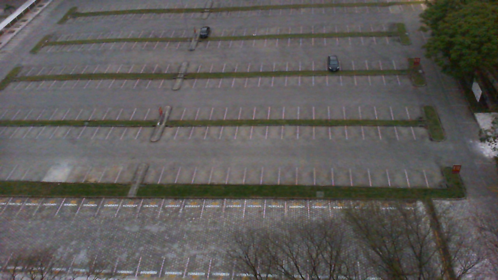
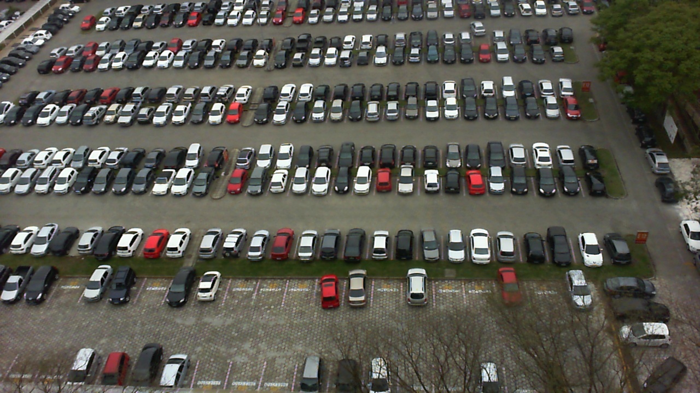
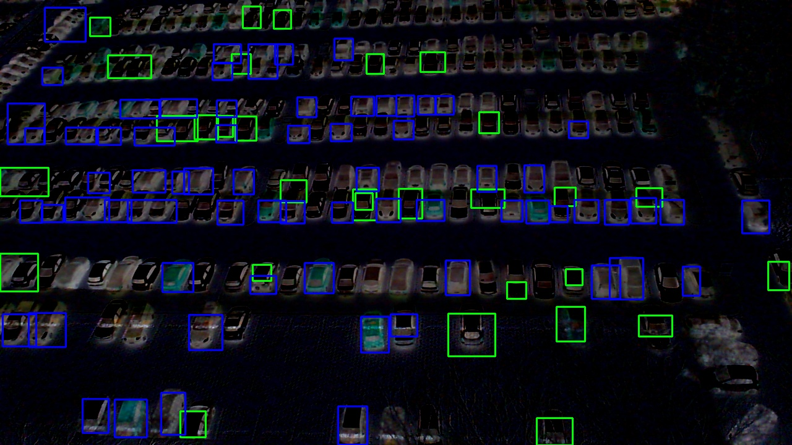

2. Mérföldkő
Parkolóhelyek detektálása
Eddigi eredmények:
Ebben a részben a parkoló autókra koncentráltam. Egy az üres és egy a teli parkolóról készült képet használtam fel. A két kép külömbsége segített meghatározni a parkoló autók számát.
Sajnos ezt még nem sikerült teljesen megoldani, mert nem mindegyik autot sikerült bekontúrózni. A következő képek az eddigi eredményeimet reprezentálják.



Eddig csak a fenti két képet vizsgáltam, de a továbbiákban az adatbázisban megadott többi képet és különboző parkolóhelyekről készült képeket is tervezem feldolgozni.
További tervek
További terveim közé tartozik az autók konturjainak javítása és az üres parkolóhelyek meghatározása is. Valamint az adatbázisban szerelpő többi kép feldolgozása is.
Források
https://docs.opencv.org/3.4/d1/dc5/tutorial_background_subtraction.html